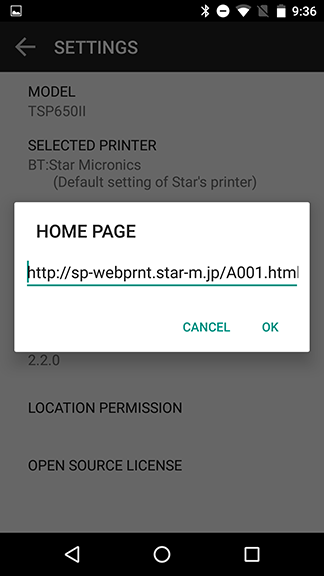
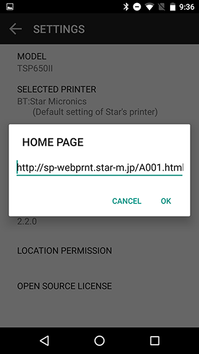
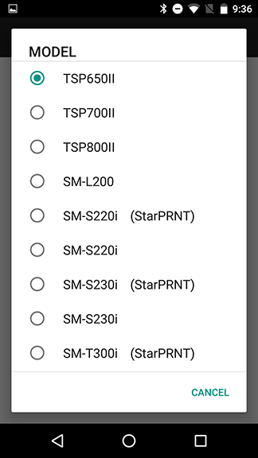
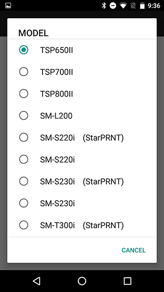
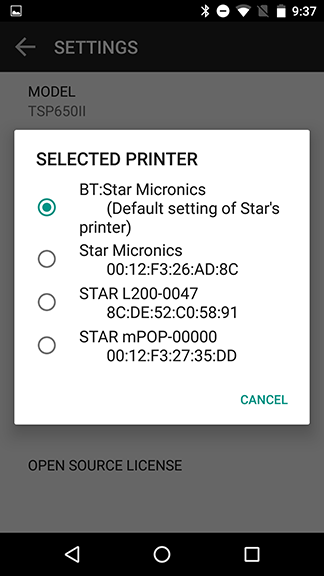
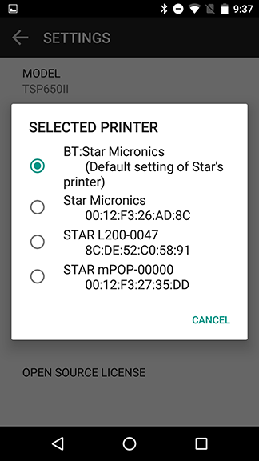

Star webPRNT User's Manual
How to use -Star webPRNT Browser -
Star webPRNT Browser + Star Bluetooth Printer (Android)
- Install the "Star webPRNT Browser" from Play Store.

- Pair the Star Bluetooth printer with your Android device.
- Open the Star webPRNT Browser.
- Tap
 and select "Settings" from the menu.
and select "Settings" from the menu.


- Specify the URL of the Web server to be used for “HOME PAGE”.
Default is the Star webPRNT sample site. Enter the URL of the Web server to be used.
 
 - Choose the Star Bluetooth printer to use for "MODEL".
When you have changed the printer’s mode to “StarPRNT”, select the printer model with “(StarPRNT)” .
 
 - Choose the printer to use for "SELECTED PRINTER"
Select a printer to use from the list of printers which have been paired.
 
 - Return to the top page and try printing.

How to Exit the Full Screen Mode
- To exit the Full Screen mode set by Settings > PREFERENCE > Full Screen,
swipe down from the top to display the "Full Screen mode" notification (as shown in the figure below),
tap it and then uncheck PREFERENCE > Full Screen from the Setting menu.


New Features
Added a function to excute external applications from the Star webPRNT Browser.
- Operation confirmed
- Phone, Mail, SMS, Camera*, Document*
*This function is available with Android OS Ver.5.0 or later.